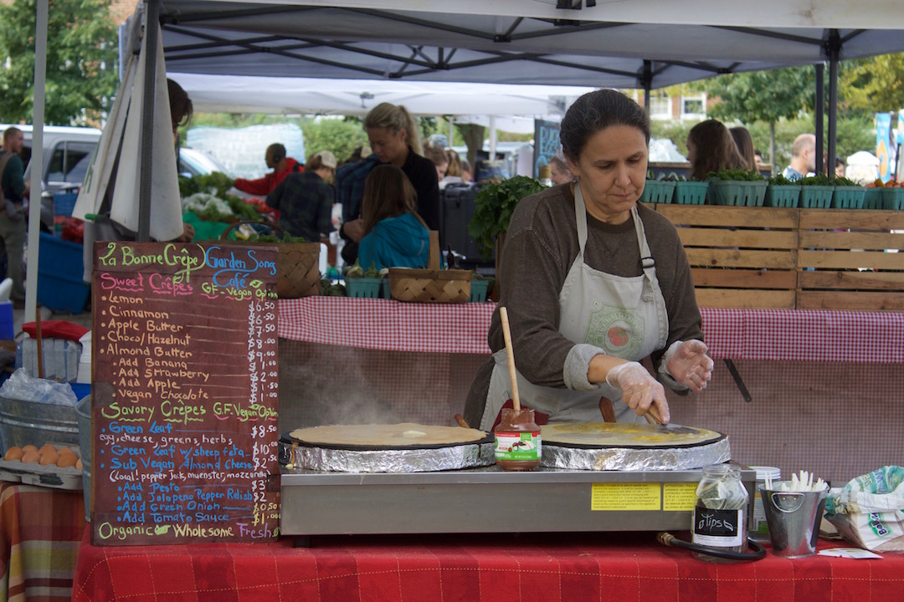
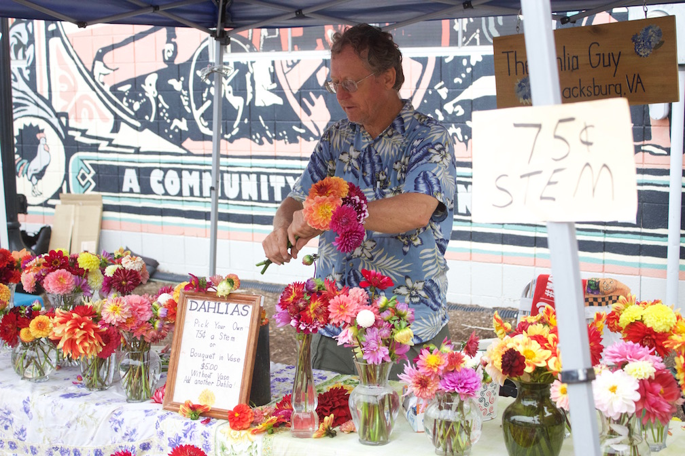
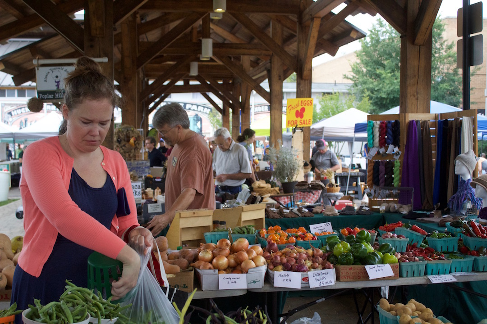
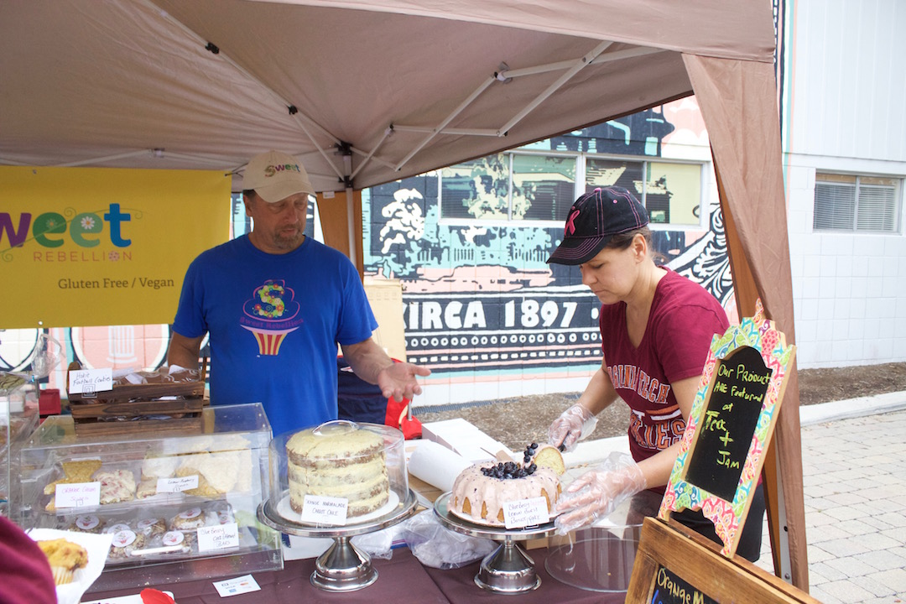
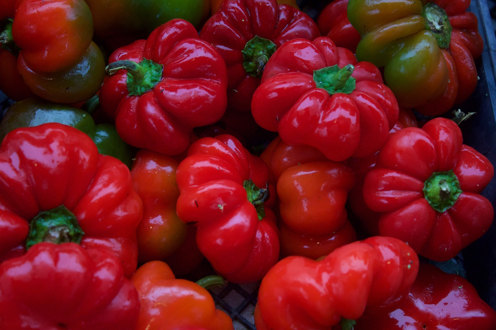

Sweet and Savory
This is my favorite place to get breakfast on Saturday mornings, the crepe place at the Farmer’s Market. There is a mix of savory and sweet options that satisfy any craving. What makes it even better? They are made fresh right then and there.

Heat
The colors of these peppers make them enticing but don’t be fooled, they’re not your average bell pepper. These will set your mouth on fire.

Cuties
This is my go to flower stand at the Market. There are beautiful premade flower arrangements for $5. They are the way I add color to my living room.

Flower Power
This is my other favorite flower stand. The vibrant colors add to the vibrance of the Farmer’s Market.

The View
This picture shows most of the dimensions of the Market. There is produce, fresh chicken eggs, scarfs and more. All, of course, are the best in town.

Sweet Treats
This sweet shop sells their baked goods at the Farmer’s Market and also at Tea and Jam on North Main Street. I love their lemon blueberry cake and am itching to try more of their delicious treats.

The Produce Stand
This picture captures the essence of fall with all the produce spilling out of the basket resembling a cornucopia.

Red Hot
This fiery red produce lives of the stand it’s sold from. These fill multiple deep bins to the brim.

Flower Power 2.0
This was taken on a game day. Game days are my favorite days to go to the Farmer’s Market because there are tons of families wearing their Hokie gear, like the woman in this picture.

Sweet Friends
These sweet friends capture the essence of community. Community is what the Blacksburg Farmer’s Market is all about. People coming together to spend time with loved ones and support local businesses.


{kind=link}
{kind=link}
{kind=link}
{kind=link}
{kind=link}